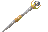
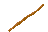
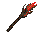
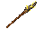

Saradomin reference

Guthix reference base

Zamorak reference base

Thunder Spire — candidate

All icons have actual 48 × 32 transparent canvases. Top: native size at 100% browser zoom. Bottom: matching 6× nearest-neighbour zoom. Backdrop is preview-only.




Prompt: wood shaft, Dark Beast horn mounted with leather lashings, and a few yellow electrical streaks. Built-in imagegen artwork, nearest-neighbour fitted within 39 × 30 and hard-alpha exported. Full prompt in staff-prompt.txt. No in-game assets changed.